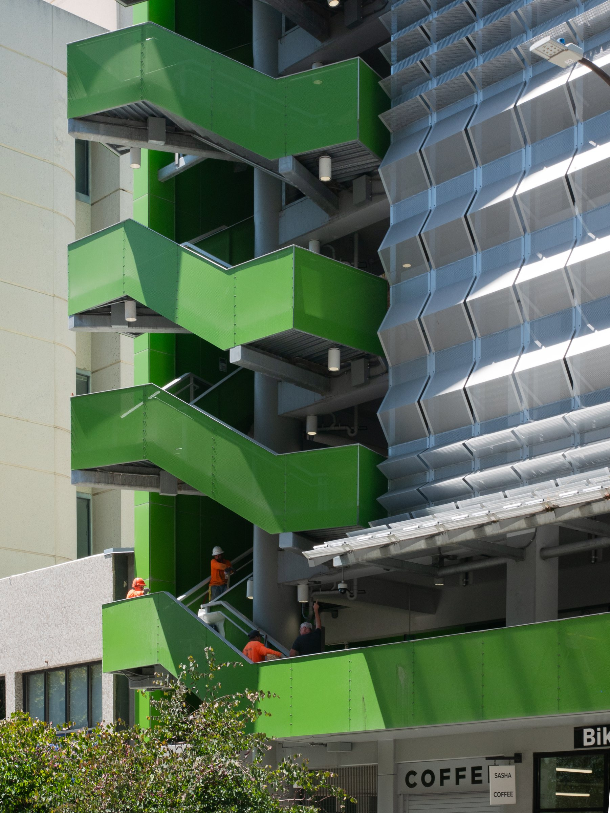
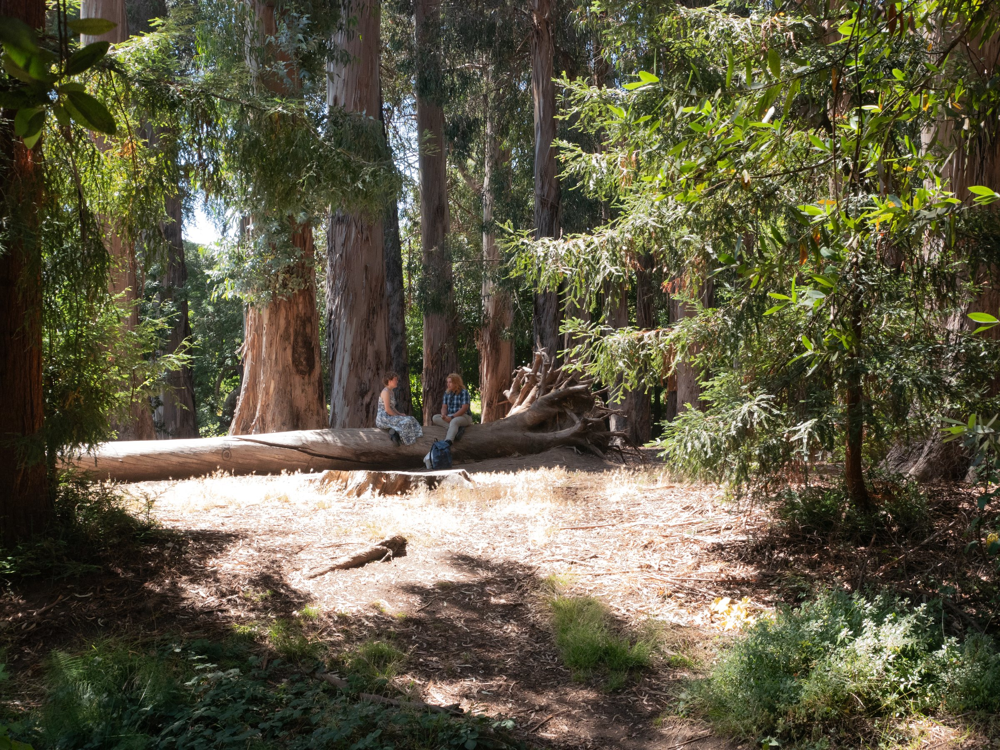
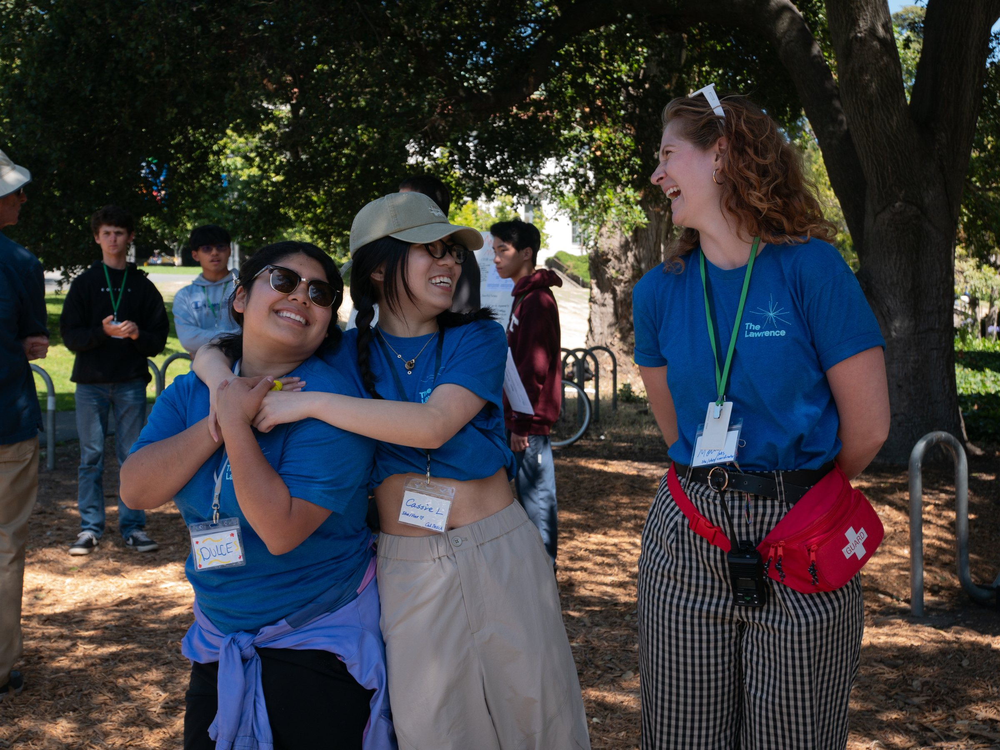

Visual Geography
Bay Area · Summer 2026
View Final Sequence →Berkeley
July 2026





Oakland, Hayward, Niles, and SF Richmond can be added with the same real-photo approach once their web images are ready.